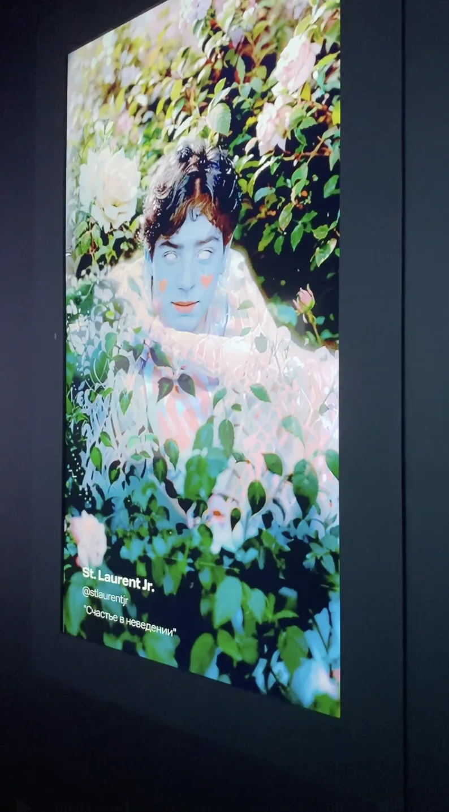
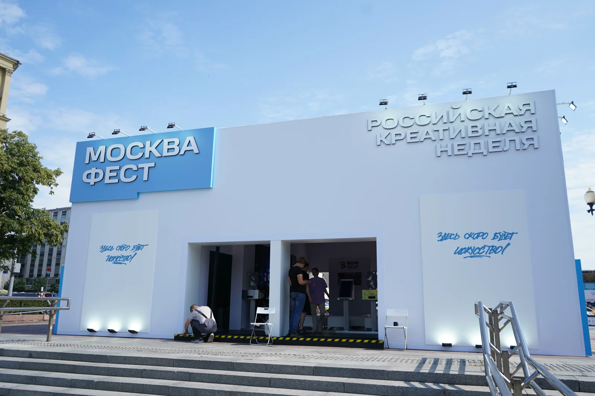

Moscow Fest · «Москва Фест»Moscow · 2023Ignorance Is Bliss at Russian Creative Week: Moscow Fest. Photos and Images Ignorance Is Bliss on a festival screen. The Russian Creative Week: Moscow Fest pavilion.